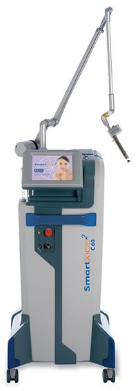

<!-- Departments Section-->
<section class="pb-0">

  <div class="container">
    <div class="row">
      <div class="col-lg-5 d-lg-block"></div>
      <div class="col-lg-7 pb-5 mb-5">
        <h1 class="text-uppercase"><span>Gynécologie esthétique et réparatrice</span></h1>
        MonaLisa Touch est un traitement de rajeunissement vaginal dont les procédures mini-invasives, assistées par laser, ont pour but d’améliorer l’état de la muqueuse qui tapisse les parois du vagin.

        C’est un traitement pour résoudre les problèmes liés à l’atrophie vaginale, les signes post-partum et post-cancer et certaines pathologies vulvaires comme le lichen ou les vulvodynies

        Les symptômes les plus courants sont la sécheresse vaginale, la laxité, les sensations de brûlure ou démangeaisons, cystites récurrentes, mauvaises odeurs, les rapports sexuels douloureux et une légère incontinence urinaire.

        MonaLisa Touch est la solution non chirurgicale et non médicamenteuse ainsi que le seul traitement reconnu par la communauté scientifique internationale.

        Déroulement d’une séance
        Le laser agit délicatement sur les parois de la muqueuse vaginale au moyen d’un scanner spécial. Des microlésions sont provoquées visant à déclencher la production de nouveau collagène. Ce qui permet de réorganiser et rééquilibrer les composants de la muqueuse vaginale. Vous ressentirez une légère sensibilité locale après le traitement laser, qui disparaissent après 1 ou 2 jours.
        Il existe plusieurs applicateurs qui permettent de traiter rapidement, efficacement et sans danger le conduit vaginal, la vulve, la région périnéale ou péri-anale, en prenant en compte l’anatomie de vos zones à traiter.
        C’est un traitement rapide, non invasif et indolore, le docteur Addenet n’utilise donc aucun anesthésique pour l’intérieur du vagin, mais éventuellement une crème anesthésiante pour les zones externes.
        Pendant le processus de guérison, vous éviterez de soulever de lourdes charges, de prendre des bains trop chauds et l’exercice physique.

        Résultat
        Les résultats sont immédiats. L’effet du laser MonaLisa Touch est optimal après 3 séances, espacées d’un mois. Ensuite, le docteur Addenet préconise une séance d’entretien un an après.
        Dès le premier traitement, vous ressentirez une diminution de la sécheresse, des sensations de brûlure et de démangeaison. L’amélioration de la sensibilité pendant les rapports sexuels est donc une conséquence naturelle. Il est généralement recommandé d’attendre 3-4 jours avant de reprendre votre activité sexuelle normale. Vous apprécierez également une baisse des symptômes liés à l’incontinence urinaire.


        Contre-indications
        Il n’y a pas de critères d’exclusion pour le traitement Monalisa Touch, si ce n’est ceux qui sont liés à des maladies graves localisées. Toutes les femmes qui souffrent de troubles intimes peuvent bénéficier de ce traitement au laser.

        Prix
        200 euros par séance.
      </div>
    </div>

  </div>
</section>

